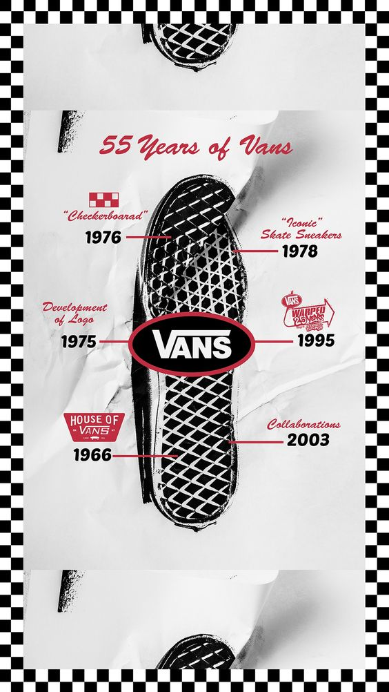

A Little Bit of Vans History
One of the UK most well known brands Vans are certainly iconic. Vans has its roots in March of 1966 when 2 brothers Paul Van Doren & Jim Van Doren partnered with Serge Delia and Gordon Lee to open the Van Doren Rubber Company, the #44 deck shoe now known as the Authentic was born.
By 1974 the skateboard community had picked up on the rugged look and sticky sole which gave flexibility and traction. In 1976 the Vans #95 (now known as The Era) which featured a padded collar and colour combinations was released and quickly became a hit, the classic Vans “Off The Wall” logo also made its first appearance in this year. Going strong 1977 saw the release of the #36 (now Old Skool) which was the first skate based shoe to combine both leather and textiles, the doodle jazz stripe of Paul Van Doren was also introduced on this shoe and has become a hallmark of Vans branding. 1977 was a big year for Vans as it also saw the release of the Vans #98 (The Classic Slip On) which with the help of BMX riders and skateboarders quickly became THE slip on shoe to have…that is still true to this day.